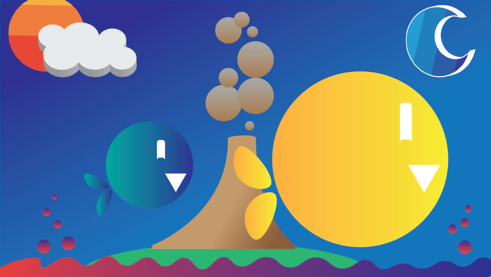
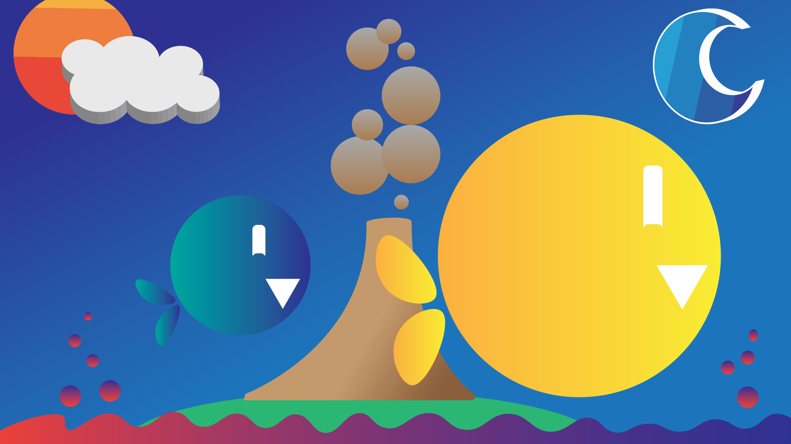
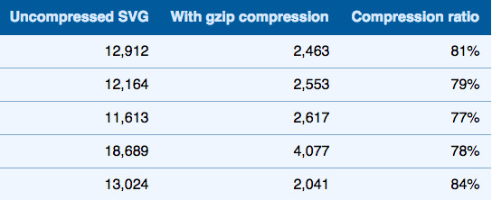
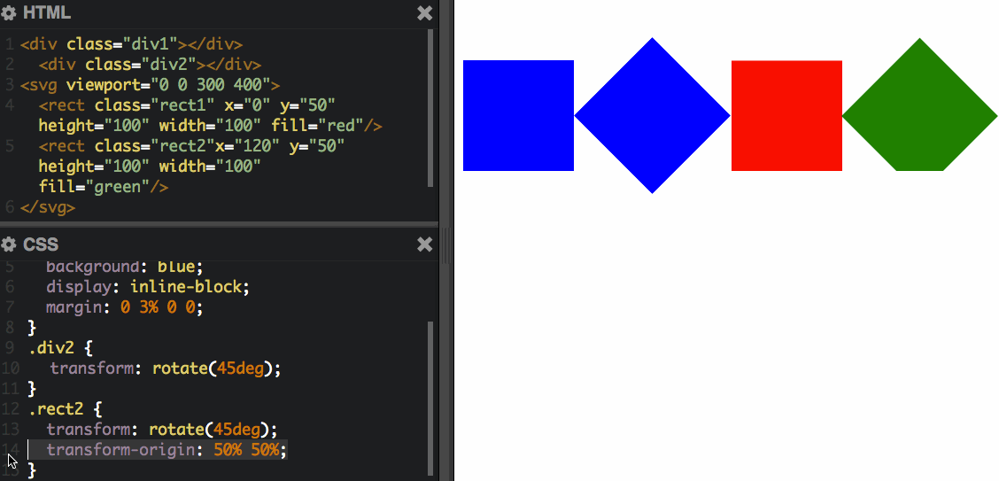

Let's
Lead Web Developer
WHY SVG?
- Resolution Indepence
- Small File Size
- Accessibility
- Interactivity
- Filters and Blend Modes
Accessible
- svg
- title - desc
- text
- ARIA role
213 KB
fishadelic.jpg
19 KB
fishadelic.svg
GZIP Compression
3.8 KB
fishadelic.svg - GZIPPED
Shapes
<rect />
CREATING SVG
EMBEDDING SVG
SVG as HTML IMG

SVG as CSS Background
.some-class {
background: url('fishadelic.jpg');
background-image: url('fishadelic.svg', none);
background-size: cover;
}
<object>
<iframe>
<embed>
STYLING SVG
Presentation Attributes
Inline CSS
RESPONSIVE SVG
.some-class {
background-image: url('fishadelic.svg', none);
background-size: cover;
}
<img>
.img {
width: 100%;
}
<object>
object {
width: 100%;
}
Padding Hack
- Remove height/width
- Set viewbox
- Wrap SVG in container
- Use Intrinsic Ratio for container
Intrinsic Ratio
.container {
height: 0;
width: desired width;
padding-top: (svg h/svg w) * desired width;
position: relative;
}
<iframe>
iframe {
position: absolute;
top: 0;
left: 0;
width: 100%;
height: 100%;
}
<svg>
svg {
position: absolute;
top: 0;
left: 0;
}
Adaptive SVG

INLINE SVG
SVG Animation
- CSS Animations
- SMIL Animations
- Javascript Animations
CSS Transforms
Synchronized
Multimedia
Integration
Language
SMIL <animate />
SMIL Path Morphing
Light Sources Animation
Icon System
Icon Fonts / Image Sprites
- Anti-aliasing
- Limited CSS control
- @font-face weirdness
- Positioning
<symbol>
your-title
your-desc
your-title
your-desc
<defs>
your-title
your-desc
your-title
your-desc
<use>
Resources